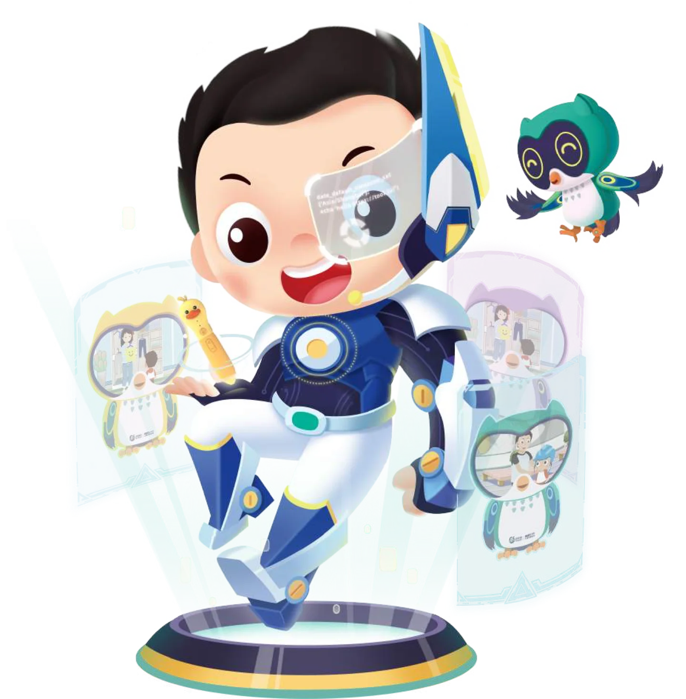

Selected Case / IP Illustration
常青藤爸爸
吉祥物「小小常」
围绕常青藤爸爸品牌吉祥物「小小常」进行主题插画创作。通过太空、游戏、自然探索等场景丰富角色设定，以明快的色彩和轻松的动作表现角色的好奇心与活力，并延续角色在不同主题中的视觉识别。

围绕常青藤爸爸品牌吉祥物「小小常」进行主题插画创作。通过太空、游戏、自然探索等场景丰富角色设定，以明快的色彩和轻松的动作表现角色的好奇心与活力，并延续角色在不同主题中的视觉识别。
